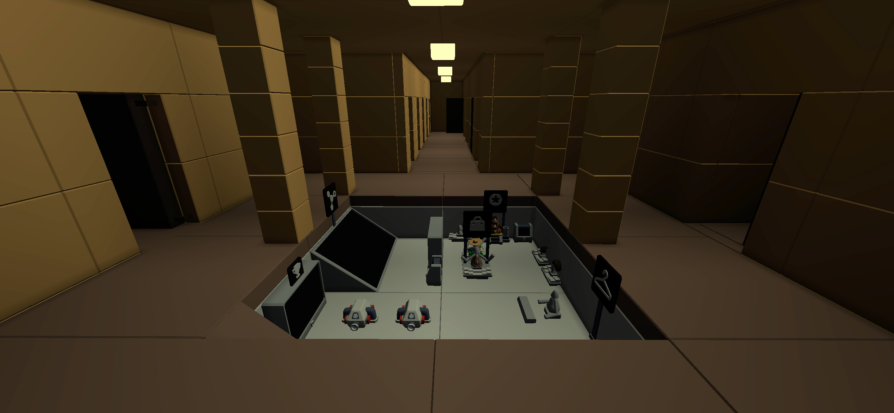

Basement

Basement was the first fully indoor map. The narrow spaces encouraged a lot more trickery and cleverness than most maps, like hiding in the ceiling or using stasis chambers
Basement was the first fully indoor map. The narrow spaces encouraged a lot more trickery and cleverness than most maps, like hiding in the ceiling or using stasis chambers